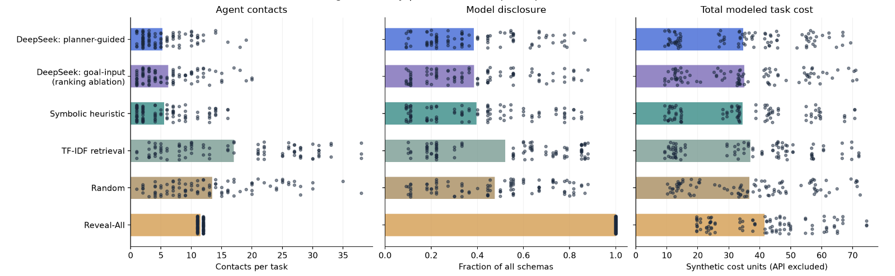

Problem Introduction
Multi-agent planning requires a team of agents to coordinate actions to reach shared goals. Currently, many existing methods assume the availability of each agent’s relevant states and actions, either globally or through a distributed representation. This assumption is restrictive for dynamically assembled teams, however. A coordinator may distribute tasks without initially knowing the exact symbolic operators that each agent can execute, how expensive those actions are, or whether an agent is currently available.
We study this problem over discrete planning rounds . At each round, new tasks may arrive, each with a planning goal, deadline, and value. Agent privately holds a formal action model , while the coordinator initially has only a partial model and a short natural-language capability profile . Agents may differ in execution time and monetary cost, and executing a plan may occupy an agent for multiple rounds. Capability information acquired from an agent persists, so the coordinator’s known model grows as . Rather than reconstructing the complete model upfront, the system should acquire only information useful for current and future tasks.
The single-task problem is the special case. Consider that a task requires an independent set of capabilities and querying agent reveals a subset .
Even if every were known, this would be a Minimum Set Cover problem and is NP-hard [3]. The continual setting is more difficult because required capabilities may only become apparent during planning, agents may become unavailable due to previous assignments, and information acquired for one task may later be reused.
Capability acquisition is therefore a sequential decision problem. Querying an agent consumes communication and monetary resources, but the acquired capability may have value beyond the current task. A capability that is expensive for one low-value task may still be worthwhile if it is likely to be reused, while spending too much of the remaining budget now may prevent the system from completing more valuable tasks later.
The coordinator seeks to maximize cumulative completed-task value , where if task is completed before its deadline. Let denote the number of contacts made with agents for task t, including failed ones and recontacts of the same agent after request changes. Each contact, including failed and repeated ones, is charged . is the task’s executed plan. Query and execution costs are
The system operates under a finite global monetary budget ,
together with task-specific deadlines and agent-availability constraints. Model disclosure is tracked separately as an information-privacy cost.
The resulting problem considers not only which capability resolves the current planning bottleneck, but also whether acquiring it is worth its long-term cost. Our hypothesis is that symbolic planning can narrow down the immediate missing capability, while semantic reasoning and a learned acquisition policy determine which agent should be queried based on current task value, agent availability, remaining resources, and the potential reuse of that capability across future tasks.
Related Work
Our project sits at the intersection of distributed multi-agent planning, active knowledge acquisition, and semantic agent discovery, which has been studied separately by previous work.
Torreño et al. proposed FMAP, a distributed cooperative multi-agent planning framework [6]. FMAP uses forward-chaining partial-order planning, allowing specialized agents to incrementally construct refined plans and collaboratively search for a solution. FMAP separates distributed and private knowledge from communication, as agents retain their local information and share only the public information needed for collaborative plan refinement. This work shows that multi-agent planning does not require every agent to fully expose its planning models. FMAP performs distributed planning using agents’ local formal models and privacy-filtered plan refinements. Our setting instead emphasizes costly discovery of initially unknown providers: the coordinator begins with coarse public profiles and must decide which agents to contact before acquiring their formal capabilities. The coordinator needs to consider which agent can solve the current bottleneck, and also whether querying or waiting for that agent is preferable to using a more expensive but immediately available alternative.
ActiveVOO, introduced by Liu et al., investigates active knowledge acquisition for open-world embodied agents [4]. Instead of observing the whole environment, ActiveVOO uses lifted regression to derive compact first-order subgoals that guide the acquisition of information most likely to improve the agent’s planning ability. Instead of acquiring all potential knowledge in the environment, the system reasons backward from the goal to determine what information matters most. This work motivates us to design a planner-guided capability acquisition mechanism. We use symbolic relevance, similar to regression analysis, to identify an unresolved planning condition, then convert it into capability requirements that guide subsequent discovery. Instead of focusing on a single embodied agent, our system acquires formal action capabilities distributed across multiple agents. Our setting also considers the monetary and temporal consequences of acquiring and executing those capabilities, together with the future value of retaining the capability information across a stream of tasks.
Guo et al.’s study on agent discovery in the Internet of Agents addresses semantic agent discovery [1]. In the study, agents publish machine-interpretable descriptions of their abilities. The framework performs task-driven capability discovery, using context-aware search, ranking, and composition to identify agents suitable for particular tasks. This study provides a foundation for the semantic capability-discovery component of our project, where the coordinator reasons over agent capability descriptions to identify candidates most likely to satisfy a requested capability. However, Guo et al.’s method begins with a clear task or request, while our work lets the planner dynamically generate the capability request. The planner then identifies the conditions hindering the task and generates a capability requirement. The coordinator also considers task constraints and resource trade-offs when performing agent selection against this requirement.
Our work combines these directions in a continual setting where agents’ formal capabilities are initially hidden and only coarse semantic descriptions are available. The symbolic planner identifies the current planning bottleneck, while semantic discovery and a long-horizon acquisition policy determine which capability to acquire and when, accounting for task feasibility, cost, availability, disclosure, and potential reuse across future tasks.
Proposed Solution Approach
We propose a planner-guided capability acquisition method for cooperative multi-agent planning with hidden action models. The framework combines symbolic diagnosis, semantic agent selection, selective disclosure, and persistent capability knowledge. We have implemented the planning and acquisition pipeline, resource-aware planning, and sequential task streams. Remaining work includes online task arrival with occupancy and true deadlines, non-myopic and learned acquisition policies, a planner-free ablation, and additional planning domains.
Implemented Planning and Capability Acquisition
Each agent privately owns a formal action model , including action preconditions, effects, execution costs, and durations. Its public information consists of a natural-language capability profile , an availability flag, and a communication charge . The coordinator receives the public task specification but initially lacks the agents’ formal operators.
The coordinator first attempts planning with its currently known model , where denotes the task and the acquisition round. If this model is proven unsolvable, a diagnostic module combines typed grounding, delete-relaxed reachability, and backward relevance analysis to identify potentially missing effects. The resulting request contains these effects, relevant objects and types, public task context, resource constraints, and previous query outcomes.
The semantic selector ranks eligible agents using their public profiles and the diagnostic request. Our default considers all eligible agents, in which an optional TF–IDF retrieval restricts the candidate set. The LLM ranks providers without certifying feasibility, and then the selected agent performs exact matching against its private model.
A successful query reveals one coherent action family , together with its execution metadata. The coordinator updates
and replans. Existing operators remain unchanged, so acquired knowledge grows monotonically. Failed and repeated contacts incur communication charges, but they prevent purchasing the same family again while its knowledge is retained.
Diagnosis uses a heuristic approach. When focused requests fail, the coordinator broadens its request to alternative achievers of goals and relevant conditions. This permits discovery of capabilities that bypass an unavailable prerequisite. Equivalent negative replies are cached within a task. Planner timeouts and computational limits stop the attempt without treating as a missing capability.
Implemented Resource Constraints and Capability Memory
The implementation supports action-count and execution-cost objectives. Under specified task limits, an accepted plan must satisfy
where the sums count action occurrences. The effective task budget is also limited by the remaining shared budget. Failed contacts consume budget, and disclosure is tracked separately as the information-privacy cost.
Without a duration constraint, Fast Downward minimizes exactly scaled execution costs over disclosed operators. Joint cost–duration constraints use bounded search that retains nondominated cost–duration labels at each symbolic state. Proven resource infeasibility can trigger acquisition of alternative achievers. As such, computational exhaustion is reported as an operational failure.
Unified Planning validates candidate plans against the acquired model, and VAL independently checks them against the evaluator’s full model. The coordinator verifies resource compliance before accepting a plan. Current durations represent sequential action-duration sums, and concurrent schedules or elapsed-time deadlines will be later implemented.
Persistent memory retains acquired operators, observed execution metadata, ownership, and disclosure receipts across predefined task streams. Thus, the next task begins with
Each task supplies its own initial state and goal, while the capability catalog, objects, and static facts remain fixed. World states reset between tasks, but acquired knowledge persists, including knowledge obtained during unsuccessful tasks.
Implemented Baselines and Experimental Framework
Our symbolic baseline is designed to follow the capability matchmaking principle of comparing requested functionality with advertised capabilities [5]. Fixed vocabulary and weights are curated to be specific to this project, which identifies road, air, and inspection roles. Handcrafted rules score compatibility with requested effects, object types, and public geographic scope, while penalizing unsuitable providers. For a request with desired effects , its score is
where is the rule-based relevance score and indicates whether agent has disclosed capabilities. Ties are resolved by the communication cost.
Other implemented comparisons include deterministic TF–IDF retrieval, random querying, Reveal-All, and a goal-input LLM ranking ablation. The latter changes the ranker’s visible request, while fixing the symbolic diagnosis and formal agent matching. The Python framework integrates seeded Logistics generators, capability-role agents, interchangeable selectors, resource accounting, and independent validation. Frozen inputs and recorded acquisition traces support paired comparisons, while persistent and fresh-memory controls evaluate capability reuse.
Proposed Online and Learned Acquisition
The current policy stops at the first admissible plan. Consequently, optimal planning over known operators does not guarantee minimum total expenditure, since a cheaper undisclosed provider may remain unexplored. We propose adding a decision layer for incremental task arrivals, absolute deadlines, and agent occupancy, choosing whether to query another provider, execute a validated plan, or wait.
We will compare an expected-reuse heuristic with a reinforcement learning policy. The heuristic follows a value-of-information perspective [2], estimating whether current and future savings justify another query. The learned policy will use observed task history, frontiers, and availability to maximize
subject to the global budget and task deadlines. Symbolic planning and validation will continue to enforce correctness, and evaluation will hold task admission fixed when isolating the benefit of acquisition foresight.
Progress and Results
Completed Work and Evaluation Protocol
We implemented all components described in Section 3 except the online and learned extensions and ran regression tests. We built a seeded Logistics generator as the standard PDDL benchmarks contain no capability ownership, private models, or public profiles. Each case of the final suite has 4–5 cities, two parcels, 11–12 agents, and 27–33 hidden schemas. We included confusable providers such as regional carriers, long-haul drivers, and airport inspectors, who own real but often unnecessary families, and paraphrased half of all profiles outside the symbolic heuristic’s vocabulary. Before any trial, Unified Planning and VAL validate every case’s witness plan and every private family. Each study uses fresh seeds, so revisions are never evaluated on the cases that motivated them.
Each trial starts from an empty model in a separate process, and all methods use identical, hash-checked inputs. We average the three repeats of each case and compute 95% confidence intervals by bootstrap resampling over the 32 cases.


View full size ↗Single-Task Acquisition
Table 1 and Figure 1 summarize results running a single task on all acquisition methods. All 576 trials produced plans validated against both the acquired and full models.
Table 1. Single-task results (means over 96 trials per method).
| Method | Contacts | Failed | Schemas | Cost |
|---|---|---|---|---|
| LLM, planner-guided | 5.27 | 1.95 | 11.28 | 34.62 |
| LLM, goal-input | 6.22 | 2.95 | 11.41 | 34.96 |
| Symbolic heuristic | 5.53 | 2.44 | 11.62 | 34.43 |
| TF–IDF retrieval | 17.00 | 12.59 | 15.38 | 37.00 |
| Random | 13.44 | 9.51 | 14.08 | 36.69 |
| Reveal-All | 11.50 | 0.00 | 29.44 | 41.53 |
Selective acquisition reduces disclosure. Planner-guided selection disclosed 18.2 fewer schemas (38% versus 100% of all schemas) in every case, made 6.2 fewer contacts, and reduced modeled cost by 6.9 units, compared with the Reveal-All method
Semantic ranking clearly beats uninformed selection. The LLM made 8.2 fewer contacts than random selection (fewer in 31 of 32 cases) and 11.7 fewer than TF–IDF retrieval.
The LLM ties a hand-built domain heuristic. The LLM’s difference from the symbolic heuristic is contacts, 95% CI . The symbolic heuristic’s modeled cost is slightly lower. The LLM performed best on mixed tasks while the heuristic performed best on local and airport tasks.
Exposing the planner frontier helps only marginally. Compared with the goal-input ablation, the planner-guided ranker made contacts and failed contacts . The goal-input variant was nonetheless better on airport tasks.
Reasoning is promising but costly. In an exploratory pilot on eight cases, DeepSeek V4.1 Flash with high thinking matched an evaluator-only match oracle on every case, needing 2.38 contacts. On the same cases, the thinking-disabled ranker needed 4.94 contacts and the symbolic heuristic needed 3.88, while high thinking cost about more per trial ($0.049). Overall, the best selectors still use roughly twice the oracle’s contacts (5.27 versus 2.34).
Task Streams and Capability Memory
We ran each method through four streams under persistent and fresh memory: an authored budget/deadline fixture (four tasks) and three generated catalogs with six repeated-goal tasks each. World states got reset between tasks. Table 2 reports all methods’ total streams results over the 22 tasks. All 132 task conditions were completed and independently replayed.
Table 2. Stream totals over 22 tasks: persistent / fresh memory. DeepSeek denotes V4.1 Flash. Q+E is query plus execution spend under persistent memory.
| Selector | Contacts | Schemas | Q+E | API $ |
|---|---|---|---|---|
| DeepSeekV4.1 flash, max | 8 / 36 | 24 / 108 | 401.2 | 0.20 / 1.01 |
| DeepSeekV4.1 flash, no thinking | 16 / 110 | 30 / 198 | 402.0 | 0.005 / 0.04 |
| GPT-6 Luna | 11 / 86 | 30 / 176 | 401.6 | 0.001 / 0.01 |
| Symbolic heuristic | 17 / 84 | 36 / 174 | 402.2 | – |
| Deterministic | 36 / 182 | 37 / 176 | 296.9 | – |
For every selector, persistent memory reduced contacts by 4.5–7.8 and new disclosures by 4.5–6.6. This is an effect of reuse instead of LLM ranking. With memory, the reasoning LLM required the fewest contacts. However, all three LLM configurations and the symbolic heuristic spent about 401 units, while the deterministic retrieval spent only 297 units. This is because acquisition stops at the first admissible plan, causing these selectors to commit to an expensive provider and never discover the cheaper one. The authored fixture confirmed that planning selects the cheap road provider under a budget and switches to air transport under a sequential deadline.
Pivots Made Based on Findings
Our findings changed both the emphasis and sequencing of the project. In the single-task experiments, planner-guided LLM selection substantially reduced contacts relative to random querying and TF-IDF retrieval, but its advantage over the symbolic heuristic and goal-input ablation remained uncertain. We therefore shifted toward identifying when semantic ranking provides additional value, retaining simpler methods as strong baselines.
The task-stream experiments revealed a more consequential limitation: fewer contacts do not necessarily reduce total expenditure. With persistent memory, LLM configurations spent approximately 402 units in query and execution costs, compared with 297 for deterministic retrieval. Our current rule stops at the first admissible plan, which can leave cheaper providers undiscovered. This finding motivates an explicit decision about whether another query is worthwhile even after a feasible plan is available.
Finally, persistent memory demonstrated capability reuse, but it does not yet demonstrate beneficial investment for future tasks. We will first compare the current reactive policy with an expected-reuse heuristic under a finite shared budget, using alternative providers with different acquisition costs, execution costs, and reuse opportunities. This comparison will establish whether acquisition foresight offers measurable benefits and clarify the remaining challenges before introducing reinforcement learning or occupancy-aware scheduling.
References
[1] Shaolong Guo, Yuntao Wang, Zhou Su, Yanghe Pan, Qinnan Hu, and Tom H. Luan. 2026. Agent Discovery in Internet of Agents: Challenges and Solutions. IEEE Network(2026), 1–9. doi:10.1109/MNET.2026.3663837
[2] Nicholas Hay, Stuart Russell, David Tolpin, and Solomon Eyal Shimony. 2012. Selecting Computations: Theory and Applications. In Proceedings of the 28th Conference on Uncertainty in Artificial Intelligence. 344–353. https://proceedings.mlr.press/r10/hay12a.html
[3] Richard M. Karp. 1972. Reducibility Among Combinatorial Problems. In Complexity of Computer Computations, Raymond E. Miller, James W. Thatcher, and Jean D. Bohlinger (Eds.). Springer, Boston, MA, 85–103. doi:10.1007/978-1-4684-2001-2_9
[4] Xiaotian Liu, Ali Pesaranghader, Jaehong Kim, Tanmana Sadhu, Hyejeong Jeon, and Scott Sanner. 2025. ActiveVOO: Value of Observation Guided Active Knowledge Acquisition for Open-World Embodied Lifted Regression Planning. In Advances in Neural Information Processing Systems, Vol. 38. 118040–118066. doi:10.52202/085713-3556
[5] Massimo Paolucci, Takahiro Kawamura, Terry R. Payne, and Katia Sycara. 2002. Semantic Matching of Web Services Capabilities. In The Semantic Web—ISWC 2002. Springer, 333–347. doi:10.1007/3-540-48005-6_26
[6] Alejandro Torreño, Eva Onaindia, and Óscar Sapena. 2014. FMAP: Distributed Cooperative Multi-Agent Planning. Applied Intelligence41, 2 (2014), 606–626. doi:10.1007/s10489-014-0540-2
← Projects